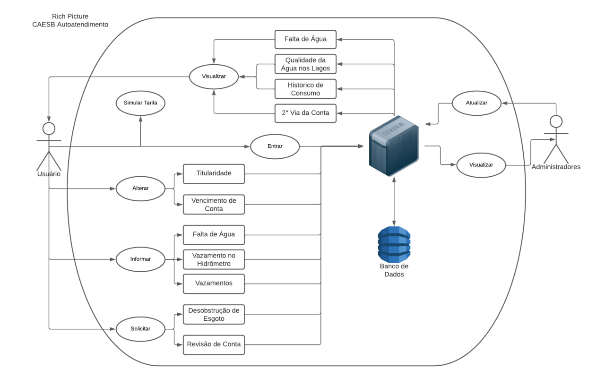
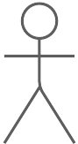
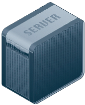

Aplicativo Escolhido
Aplicativos analisados
Para a escolha do aplicativo, cada integrante montou uma Rich Picture relativa a uma das possíveis escolhas para o projeto. Sendo assim, Com base nisso o grupo se baseou e escolheu a que fosse de maior agrado. Dessa forma, abaixo será apresentado os critérios de escolha do aplicativo, o que foi escrito sobre o aplicativo escolhido de cada integrante, e além disso a rich picture realizada por estes. na tabela a seguir é possível observar a escolha de cada integrante e o rich picture produzido.
| Nome | Aplicativo | Rich Picture |
|---|---|---|
| Caetano Santos | Rich Picture | |
| Carla de Araujo | GitHub | Rich Picture |
| Daniel dos Santos | CAESB Autoatendimento | Rich Picture |
| Guilherme Kishimoto | Serasa | Rich Picture |
| Paulo VIctor | LibreOffice Reader | Rich Picture |
| Pedro Barbosa | iLovePDF | Rich Picture |
| Raquel Eucaria | Acolha-se | Rich Picture |
Tabela 1: Aplicativos Avaliados por Membro. (Fonte: autores, 2023).
Aplicativo definido
Após a seleção individual de cada integrante, o grupo decidiu que o aplicativo seria o da Caesb a partir dos seguintes critérios:
- O aplicativo não poderia ter sido trabalhado anteriormente na disciplina de Requisitos de Software
- O aplicativo precisa ser um software livre ou do governo, e deve permitir a engenharia reversa e análise completa deste
- O aplicativo deve ser profundo o sufiicente para poder ser realizado uma análise completa
Caesb
O aplivativo da CAESB (Companhia de Saneamento Ambiental do Distritu Federal) foi criado com o objetivo de se ter praticidade, permitindo que o usuário tenha acesso a diversos recursos, como:
- Avisos sobre a Falta de Água.
- Qualidade de Água em Lagos.
- Informações em Geral para os Usuários.
Como também permite que o usuário ajude o trabalho da CAESB pelo recurso de poder informar onde se tem um vazamento para que possa ser corrigido. A paritr do momento que o usuário se conecta, também é possível ter acesso a outros serviços, como:
- 2° Via de Conta.
- Informar Falta de Água.
- Alterar Titularidade.
- Entre outros.
Segue abaixo a pagina do aplicativo na Play Store.

Figura 1: Aplicativo da CAESB. (Fonte: Autor, 2023).
Rich picture
Rich Picture é um modelo informal com o objetivo de auxiliar a indentificação de processos de négocios e seus requisitos, como também dos autores envolvidos nos processos, suas responsabilidades e seus relacionamentos. Então a seguir, se tem a primeira versão feita para o Rich Picture do aplicativo da CAESB.

Figura 2: CAESB Autoatendimento Rich Picture. (Fonte: Autor, 2023).
Tendo em vista esa primira, foi realizada uma revisãa, sendo apontadas as seguintes características a serem consideradas para se realizar uma nova versão:
Revisão Rich Picture
Introdução
O objetivo desse artefato é revisar a versão 1 da Rich Picture.
A corrigir
- Não precisa mostrar o fluxo do programa, por exemplo, as operações que, no aplicativo, precisam efetuar login para que seja utilizada estão sendo representadas após a operação entrar, essas operações dependentes do login devem estar ligadas diretamente ao usuário.
- Algumas operações deveriam ser armazenamento de dados, por exemplo, "2 via da conta" e esta deve ficar ligada diretamente ao usuário através da operação visualizar.
- O armazenamento de dados “banco de dados” não deve representar um armazenamento de dados, deve ser apenas uma representação, utilizando apenas uma imagem que a represente.
- O armazenamento de dados “dados do usuário” deve ser representada pelo próprio banco de dados, não sendo considerado uma operação.
- A operação “2 via da conta”, que deveria ser um armazenamento de dados deve ter uma seta ligando o banco de dados nela.
- O armazenamento de dados “solicitações” não deve ser um armazenamento de dados e sim uma operação ”solicitar”.
Diante disso se tem a nova versão atualziada do Rich Picture: 
Firgura 3: CAESB Autoatendimento Rich Picture. (Fonte: Autor, 2023).
| Legenda | |||||
|---|---|---|---|---|---|
| Atores | Banco de dados | Fronteira do Sistema | Operações | Servidor | Tabelas |
|  |  |
 |
 |  |
Tabela 1: Legenda da Rich Picture. (Fonte: Autor, 2023).
Histórico de Versão
| Data | Data Prevista de Revisão | Versão | Descrição | Autor | Revisor |
|---|---|---|---|---|---|
| 14/04/2023 | 15/04/2023 | 1.0 | Criação do documento | Paulo e Raquel | Carla |
| 14/04/2023 | 15/04/2023 | 2.0 | Adicionando a Rich Picture e fazendo correções | Daniel, Guilherme e Raquel | Carla |